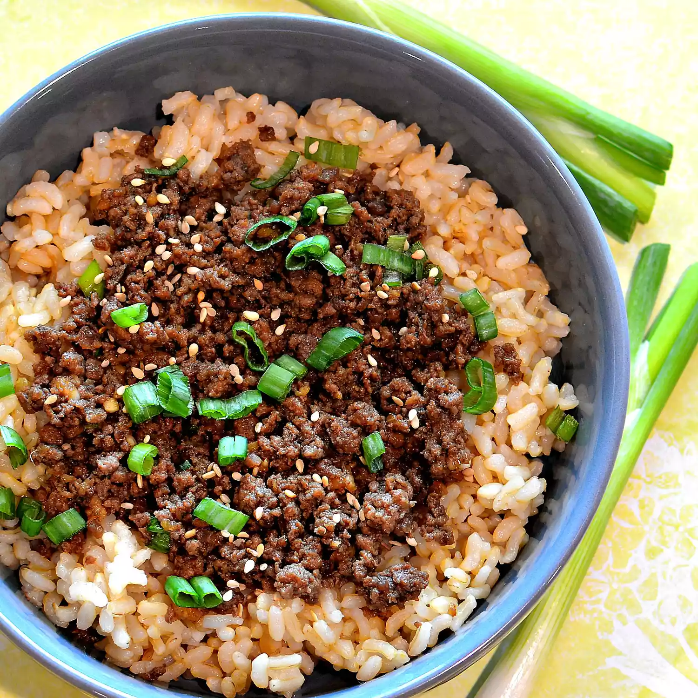

Recipe for Ground beef

Description
This Korean beef bowl is quick and easy to make. The ingredients can
easily be adjusted to suit your taste. Serve over warm rice or spiralized vegetables.
Ingredients
- 1 pound lean ground beef
- 5 cloves garlic, crushed
- 1 tablespoon freshly grated ginger
- 2 teaspoons toasted sesame oil
- ½ cup reduced-sodium soy sauce
Steps
- Heat a large skillet over medium-high heat. Add beef and cook, stirring
and crumbling into small pieces until browned, 5 to 7 minutes. Drain excess grease.
- Stir in garlic, ginger, and sesame oil and cook until fragrant, about 2 minutes. Stir in soy sauce, brown sugar, and red pepper.
Cook until beef absorbs some sauce, about 7 minutes. Add 1/2 of chopped green onions.
- Heat olive oil in a skillet over medium heat; cook and stir chicken in hot oil until lightly brown, about 5 minutes.
- Pour honey mixture into the skillet; continue to cook and stir until chicken is no longer pink in the center and sauce is thickened, about 5 minutes more.